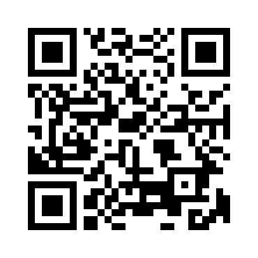

Scan the QR code below with your smartphone camera to read our complete Safe Sanctuary Policy online.

Or visit:
silverhillmumc.org/policies/safe-sanctuary/
Our Safe Sanctuary Policy demonstrates our commitment to the physical, emotional, and spiritual safety of all children, youth, and vulnerable adults in our church community.